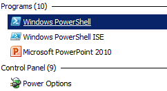

PowerShell for Admins - CLI Task Answers
Here's one
solution to the CLI Task Test, there are different
commands you could have used (eg. ls
instead of dir
- as ls
is the Linux/UNIX command for "list", or you could have used the actual PowerShell command Get-ChildItem or its
alias gci -
they are all the same). There is no best answer, whatever lets you move
around PowerShell and get things done is correct. Use whatever you feel
comfortable with (DOS aliases have the benefit of being usable in a CMD
Command Line as well - twice the knowledge/half the work!).
CLI Task Test Transcript
Some of the spaces have been removed, but with line numbers of the CLI Task Test questions added occationally to help you find
your spot. The commands I typed are in purple. Jump straight to: #1, 3, 6, 10, 11, 15, 17, and 20.
1.
 
Windows PowerShell
Copyright (C) 2012 Microsoft Corporation. All rights reserved.
PS C:\Users\USERNAME> pwd
Path
----
C:\Users\USERNAME
PS C:\Users\USERNAME> $psversiontable
Name
Value
----
-----
PSVersion
3.0
WSManStackVersion 3.0
SerializationVersion 1.1.0.1
CLRVersion
4.0.30319.42000
BuildVersion
6.2.9200.16481
PSCompatibleVersions {1.0, 2.0, 3.0}
PSRemotingProtocolVersion 2.2
PS C:\Users\USERNAME> echo "I am using PowerShell Version 3.0"
I am using PowerShell Version 3.0
PS C:\Users\USERNAME> cd \
PS C:\> mkdir Playground
Directory: C:\
Mode
LastWriteTime Length Name
----
------------- ------ ----
d----
2/19/2017 10:18
AM
Playground
PS C:\> cd Playground
3.
PS C:\Playground> notepad example.txt
PS C:\Playground> mkdir Folder1
Directory: C:\Playground
Mode
LastWriteTime Length Name
----
------------- ------ ----
d----
2/19/2017 10:21
AM
Folder1
PS C:\Playground> mkdir Folder2
Directory: C:\Playground
Mode
LastWriteTime Length Name
----
------------- ------ ----
d----
2/19/2017 10:21
AM
Folder2
PS C:\Playground> dir
Directory: C:\Playground
Mode
LastWriteTime Length Name
----
------------- ------ ----
d----
2/19/2017 10:21
AM
Folder1
d----
2/19/2017 10:21
AM
Folder2
-a---
2/19/2017 10:21
AM 80 example.txt
6.
PS C:\Playground> copy example.txt folder1
PS C:\Playground> cd folder1
PS C:\Playground\folder1> notepad file.txt
PS C:\Playground\folder1> copy file.txt ..\folder2
PS C:\Playground\folder1> del example.txt
PS C:\Playground\folder1> cd ..
PS C:\Playground> cd folder2
10.
PS C:\Playground\folder2> ren file.txt file.ps1
PS C:\Playground\folder2> file.ps1
file.ps1 : The term 'file.ps1' is not recognized as the name of a cmdlet, function, script file, or operable program.
Check the spelling of the name, or if a path was included, verify that the path is correct and try again.
At line:1 char:1
+ file.ps1
+ ~~~~~~~~
+ CategoryInfo :
ObjectNotFound: (file.ps1:String) [], CommandNotFoundException
+ FullyQualifiedErrorId : CommandNotFoundException
Suggestion [3,General]: The command file.ps1 was not found, but does exist in the current location. Windows PowerShell does not load commands from the current location by default. If you trust this command, instead type ".\file.ps1". See "get-help about_Command_Precedence" for more details.
PS C:\Playground\folder2> .\file.ps1
.\file.ps1 : File C:\Playground\folder2\file.ps1 cannot be loaded because running scripts is disabled on this system.
For more information, see about_Execution_Policies at http://go.microsoft.com/fwlink/?LinkID=135170.
At line:1 char:1
+ .\file.ps1
+ ~~~~~~~~~~
+ CategoryInfo :
SecurityError: (:) [], PSSecurityException
+ FullyQualifiedErrorId : UnauthorizedAccess
PS C:\Playground\folder2> set-executionpolicy remotesigned
Execution Policy Change
The execution policy helps protect you from scripts that you do not trust. Changing the execution policy might expose
you to the security risks described in the about_Execution_Policies help topic at
http://go.microsoft.com/fwlink/?LinkID=135170. Do you want to change the execution policy?
[Y] Yes [N] No [S] Suspend [?] Help (default is "Y"): y
PS C:\Playground\folder2> .\file.ps1
your
PowerShell
code
here!
PS C:\Playground\folder2> # "write" is a PowerShell command, remember? (well an alias for one)
11.
PS C:\Playground\folder2> cd ..
PS C:\Playground> notepad "Long Name.txt"
PS C:\Playground> more '.\Long Name.txt'
Here is another example file. I created it with Notepad as well.
The filename has a space in it so I put it in "quotes" - otherwise
PowerShell would think it was 2 different names: "Long" and "Name.txt"
PS C:\Playground> # I didn't type: more '.\Long name.txt' - I typed: more long[pressed TAB]
PS C:\Playground> # and PowerShell autocompleted the name (much easier with long file names!)
PS C:\Playground> ren "long name.txt" tiny.txt
PS C:\Playground> move tiny.txt Folder2
PS C:\Playground> cd Folder2
15.
PS C:\Playground\Folder2> copy tiny.txt temp.txt
PS C:\Playground\Folder2> copy tiny.txt test.txt
PS C:\Playground\Folder2> # I didn't type the whole command again, I press UP ARROW and edited the previous command.
PS C:\Playground\Folder2> dir
Directory: C:\Playground\Folder2
Mode
LastWriteTime Length Name
----
------------- ------ ----
-a---
2/19/2017 10:24
AM 34 file.ps1
-a---
2/19/2017 10:45 AM 205
temp.txt
-a---
2/19/2017 10:45 AM 205
test.txt
-a---
2/19/2017 10:45 AM 205
tiny.txt
PS C:\Playground\Folder2> dir t*
Directory: C:\Playground\Folder2
Mode
LastWriteTime Length Name
----
------------- ------ ----
-a---
2/19/2017 10:45 AM 205
temp.txt
-a---
2/19/2017 10:45 AM 205
test.txt
-a---
2/19/2017 10:45 AM 205
tiny.txt
PS C:\Playground\Folder2> # unlike DOS you don't need to specify t*.*, but you can if you're used to that.
PS C:\Playground\Folder2> dir *.ps1
Directory: C:\Playground\Folder2
Mode
LastWriteTime Length Name
----
------------- ------ ----
-a---
2/19/2017 10:24
AM 34 file.ps1
17.
PS C:\Playground\Folder2> pwd
Path
----
C:\Playground\Folder2
PS C:\Playground\Folder2> del *
PS C:\Playground\Folder2> dir
PS C:\Playground\Folder2> cd..
PS C:\Playground> # People often skip the space after CD in: cd.. or cd\ and PowerShell is OK with that.
PS C:\Playground> rmdir Folder2
PS C:\Playground> rmdir Folder1
Confirm
The item at C:\Playground\Folder1 has children and the Recurse parameter was not specified. If you continue, all
children will be removed with the item. Are you sure you want to continue?
[Y] Yes [A] Yes to All [N] No [L] No to All [S] Suspend [?] Help (default is "Y"): y
PS C:\Playground> # You can specify -recurse if the folder is not empty, but that bypasses the safety checks.
20.
PS C:\Playground> dir
Directory: C:\Playground
Mode
LastWriteTime Length Name
----
------------- ------ ----
-a---
2/19/2017 10:21
AM 80 example.txt
PS C:\Playground> del example.txt
PS C:\Playground> cd \
PS C:\> rmdir playground
PS C:\> dir playground
dir : Cannot find path 'C:\playground' because it does not exist.
At line:1 char:1
+ dir playground
+ ~~~~~~~~~~~~~~
+ CategoryInfo :
ObjectNotFound: (C:\playground:String) [Get-ChildItem],
ItemNotFoundException
+ FullyQualifiedErrorId : PathNotFound,Microsoft.PowerShell.Commands.GetChildItemCommand
PS C:\> exit
Done. Ready to start using PowerShell!